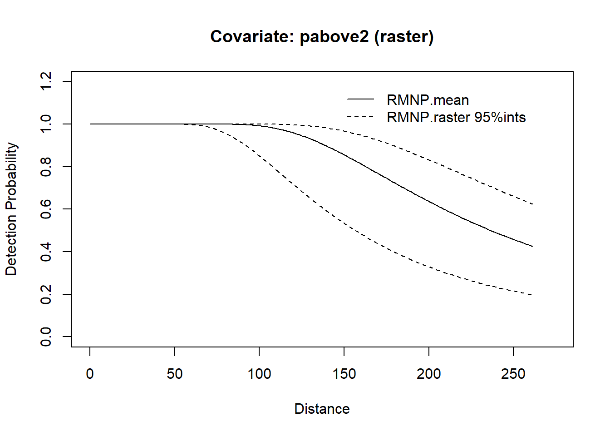
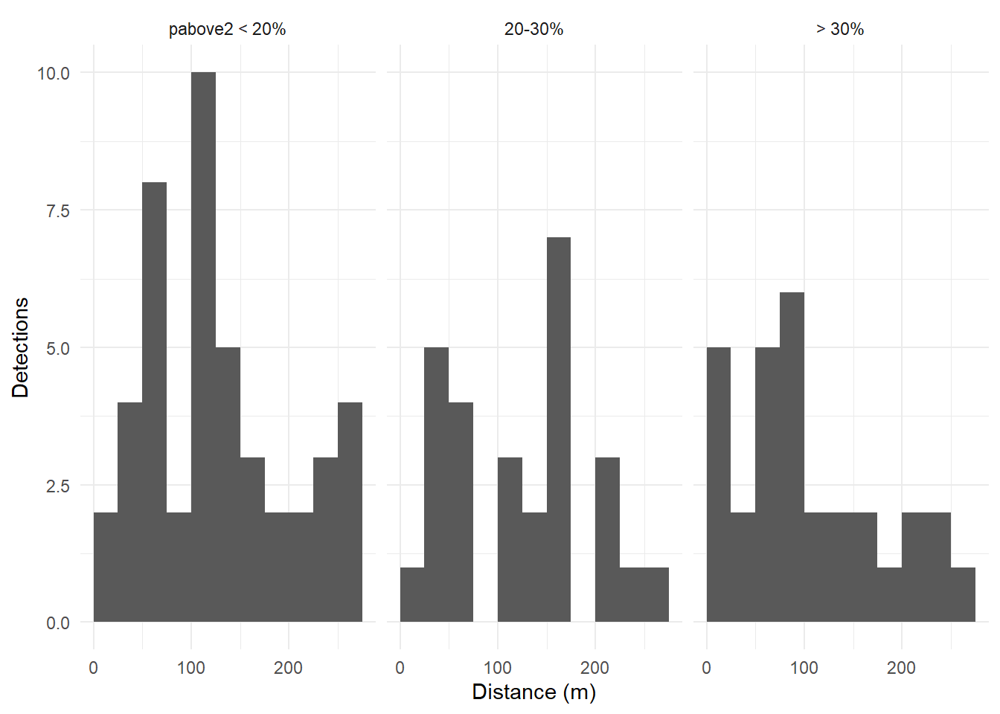
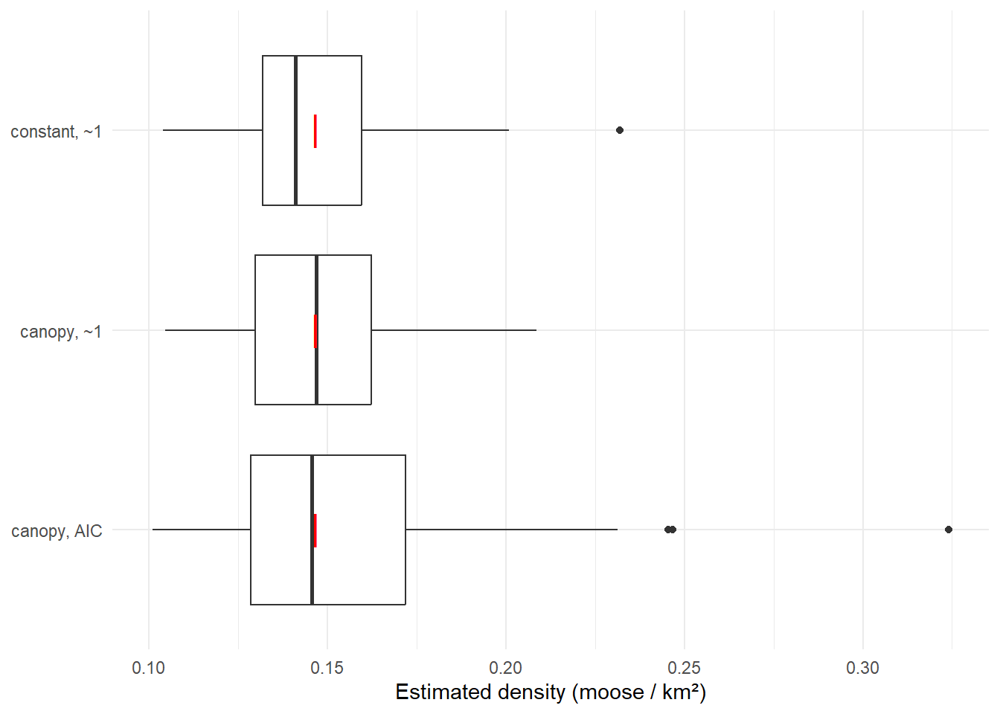

library(here)
library(dsims)
library(sf)
library(terra)
library(ggplot2)
stopifnot("cov.surface" %in% names(formals(make.detectability)))Simulating spatially varying detectability
Introduction
In the RMNP survey, animals were harder to detect under dense canopy: the detection function with lidar canopy cover (pabove2) was clearly better supported than one without it. Detectability therefore varies across the landscape with the forest, and so does the proportion of animals a survey misses.
Simulations normally draw detectability from a fixed detection function, or from individual covariates such as group size that are unrelated to location. The fork of dsims adds spatial covariates: make.detectability() takes a raster through the new cov.surface argument, and at every repetition reads the raster at each simulated animal’s location. The scale parameter of animal \(i\) is then
\[\log(\sigma_i) = \log(\sigma_0) + \beta z_i,\]
where \(z_i\) is the raster value at the animal, \(\beta\) the coefficient given in cov.param, and \(\sigma_0\) the scale parameter. This is the same log-linear form that Distance uses for covariates, so the fitted coefficients can be used directly. This article is the first documentation of the feature.
The survey design is fixed throughout: the segmented grid of 10 km north–south transects that is the standard design for aerial ungulate surveys in Alberta (see Survey designs with subplots). Only detectability and the analysis change. We simulate the moose survey three times: with constant detectability, and with canopy-dependent detectability analysed with and without the canopy covariate. This shows what the covariate changes in the simulated data and whether the analysis has to account for it.
Prerequisites
cov.surface exists only in the fork of dsims:
remotes::install_github(c("hambrecht/dssd", "hambrecht/dsims"))We load the region, populations and detection function parameters from From density surface model to simulation, and the segmented grid design from Survey designs with subplots.
list2env(readRDS(here("workflow", "outputs", "simulation_setup.rds")), envir = environment())<environment: R_GlobalEnv>design_seg <- readRDS(here("workflow", "outputs", "simulation_designs.rds"))$design_segThe covariate surface
cov.surface takes a single-layer raster, read at the animals’ x and y coordinates, so it must be in the same CRS as the region. We write the canopy cover layer to its own GeoTIFF. A file path is better than an in-memory raster for parallel runs, because each worker then reads the file itself instead of receiving a copy of the raster.
lidar <- rast(here("data", "RMNP", "lidar", "lidar_pabove2_zmax_10m.tif"))
stopifnot(same.crs(lidar, region@region))
canopy_file <- here("workflow", "outputs", "pabove2_10m.tif")
writeRaster(lidar[[1]], canopy_file, overwrite = TRUE, names = "pabove2")Animals outside the raster, here in the part of the park without lidar data, get the raster mean, and dsims warns when this happens.
Detectability that depends on canopy
We use the fitted hazard-rate detection function for moose: the scale parameter at zero canopy cover, the shape parameter, and the canopy coefficient. The name of the entry in cov.surface must match the name in cov.param.
detect_canopy <- make.detectability(
key.function = "hr",
scale.param = scale_species[["Moose"]],
shape.param = shape,
cov.param = list(pabove2 = beta_pabove2),
cov.surface = list(pabove2 = canopy_file),
truncation = TRUNCATION_M
)plot(detect_canopy, pop_descs$Moose)
The dashed lines show the range of the covariate effect: detection probability is highest in the open and lowest under the densest canopy. Most of the park lies between these extremes.
One simulated survey
A single simulated survey shows the covariate at work. The canopy value at each detected group is carried into the survey data, where the analysis can use it.
set.seed(2025)
sim_one <- make.simulation(reps = 1, design = design_seg, population.description = pop_descs$Moose,
detectability = detect_canopy,
ds.analysis = make.ds.analysis(dfmodel = ~1, key = "hr", truncation = TRUNCATION_M))
survey <- run.survey(sim_one)
detections <- survey@dist.data[!is.na(survey@dist.data$object), ]
nrow(detections)[1] 102detections$canopy <- cut(detections$pabove2, c(-Inf, 20, 30, Inf),
labels = c("pabove2 < 20%", "20-30%", "> 30%"))
ggplot(detections, aes(distance)) +
geom_histogram(binwidth = 25, boundary = 0) +
facet_wrap(~canopy) +
labs(x = "Distance (m)", y = "Detections") +
theme_minimal()
With the weak canopy effect estimated from the 10 m lidar, the distance distributions differ only a little between canopy classes.
Simulations
We run three simulations of the segmented grid design, each with 100 repetitions:
- constant: the constant detection function from From density surface model to simulation, analysed without covariates (
~1). This is the reference. - canopy,
~1: canopy-dependent detectability, analysed without covariates. The analysis relies on pooling robustness: a detection function without covariates can still estimate density without bias when detectability varies between animals (Buckland et al. 2001). - canopy, AIC: canopy-dependent detectability, with AIC choosing between
~1and~pabove2, as in the real analysis.
analysis_null <- make.ds.analysis(dfmodel = ~1, key = "hr", truncation = TRUNCATION_M)
analysis_canopy <- make.ds.analysis(dfmodel = list(~1, ~pabove2), key = c("hr", "hr"),
truncation = TRUNCATION_M, criteria = "AIC")REPS <- 100
set.seed(2025)
run <- function(detect, analysis) {
sim <- make.simulation(reps = REPS, design = design_seg, population.description = pop_descs$Moose,
detectability = detect, ds.analysis = analysis)
run.simulation(sim, run.parallel = TRUE)
}
scenarios <- c("constant, ~1", "canopy, ~1", "canopy, AIC")
sims <- list(
run(detect_constant, analysis_null),
run(detect_canopy, analysis_null),
run(detect_canopy, analysis_canopy)
)
names(sims) <- scenariosResults
For each simulation we extract the density of individuals (true and mean estimate, animals per km²), the bias, the root mean squared error relative to the true density (RRMSE), the proportion of 95% confidence intervals containing the true density, and the mean coefficient of variation. We also compare the true average detection probability of the groups in the covered area (\(P_a\)) with its estimate.
sim_metrics <- function(sim) {
s <- summary(sim, description.summary = FALSE)
D <- s@individuals$D[nrow(s@individuals$D), ]
det <- s@detection
data.frame(true_D = D$Truth * 1e6, mean_D = D$mean.Estimate * 1e6,
bias_pct = D$percent.bias, rrmse = D$RMSE / D$Truth,
ci_coverage = D$CI.coverage.prob, mean_cv = D$mean.se / D$mean.Estimate,
true_Pa = det$mean.observed.Pa[nrow(det)], est_Pa = det$mean.estimate.Pa[nrow(det)])
}
results <- cbind(scenario = scenarios, do.call(rbind, lapply(sims, sim_metrics)))
rownames(results) <- NULL
knitr::kable(results, digits = 3)| scenario | true_D | mean_D | bias_pct | rrmse | ci_coverage | mean_cv | true_Pa | est_Pa |
|---|---|---|---|---|---|---|---|---|
| constant, ~1 | 0.147 | 0.147 | -0.120 | 0.148 | 0.96 | 0.157 | 0.838 | 0.838 |
| canopy, ~1 | 0.147 | 0.147 | 0.473 | 0.160 | 0.95 | 0.163 | 0.826 | 0.821 |
| canopy, AIC | 0.147 | 0.154 | 4.780 | 0.242 | 0.95 | 0.179 | 0.825 | 0.815 |
How often did AIC choose the canopy model? The Detection results record which candidate model was selected in each repetition.
selected <- sims[["canopy, AIC"]]@results$Detection[1, "SelectedModel", seq_len(REPS)]
canopy_share <- mean(selected == 2) # model 2 is ~pabove2
canopy_share[1] 0.43estimates <- do.call(rbind, lapply(scenarios, function(sc) {
est <- sims[[sc]]@results$individuals$D
data.frame(scenario = sc, D = est[dim(est)[1], "Estimate", seq_len(REPS)] * 1e6)
}))
estimates$scenario <- factor(estimates$scenario, levels = rev(scenarios))
ggplot(estimates, aes(D, scenario)) +
geom_boxplot() +
geom_point(data = results, aes(true_D, scenario), shape = 124, size = 6, colour = "red") +
labs(x = "Estimated density (moose / km²)", y = NULL) +
theme_minimal()
With 100 repetitions, the Monte Carlo standard error of the bias is roughly the RRMSE divided by 10, here one to two percentage points, and that of the confidence interval coverage about 0.02.
- Detectability. The fitted canopy effect is weak (a coefficient of -0.0101 per percentage point of
pabove2). Canopy therefore lowers the average detection probability of moose groups only slightly, from 0.84 to 0.83. - Ignoring canopy. With canopy-dependent detectability, a detection function without covariates (
~1) still estimates overall density with a bias of 0.5% and an RRMSE of 0.16, close to the constant-detectability reference (0.148). This is pooling robustness: the detection function averages over the variation in detectability, and because the design samples canopy conditions in proportion to their extent, the average is the right one. - Including canopy. AIC chose the canopy model in 43% of repetitions. Offering it made the estimates worse rather than better: the RRMSE rose to 0.242 and the bias to 4.8%. With an effect this weak, the extra parameter adds variance, and a hazard-rate model with a covariate is harder to fit reliably to a single survey’s data than one without.
Discussion
For moose in Riding Mountain National Park, the canopy effect estimated from the 10 m lidar is too weak to matter for the overall density. The simpler analysis without the covariate is both unbiased and more precise. That conclusion depends on the size of the effect. In the RMNP paper, the canopy coefficient was more than twice as strong, and in denser forest the loss of detections under canopy would be larger; rerunning this article with a stronger cov.param shows how the conclusions change.
Pooling robustness also has limits: it does not protect estimates for parts of the area where detectability differs from the average, such as density in dense forest alone. It also requires the design to sample canopy conditions representatively (Rexstad et al. 2023). A design whose transects under-sample dense forest, or estimates reported by habitat, need the canopy covariate in the analysis. Those are the situations where simulating detectability from the canopy raster is most useful, because constant detectability would hide the problem.
The next article combines it with species-specific detectability to simulate a multi-species survey.
Saving
write.csv(results, here("workflow", "outputs", "simulation_detectability.csv"), row.names = FALSE)References
Buckland, S. T., D. R. Anderson, K. P. Burnham, J. L. Laake, D. L. Borchers, and L. Thomas. 2001. Introduction to Distance Sampling: Estimating Abundance of Biological Populations. Oxford University Press.
Rexstad, Eric, Stephen T. Buckland, Laura Marshall, and David L. Borchers. 2023. “Pooling Robustness in Distance Sampling: Avoiding Bias When There Is Unmodelled Heterogeneity.” Ecology and Evolution 13 (1): e9684. https://doi.org/10.1002/ece3.9684.